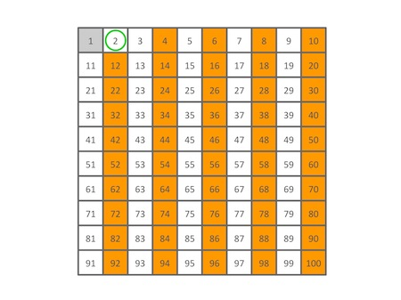
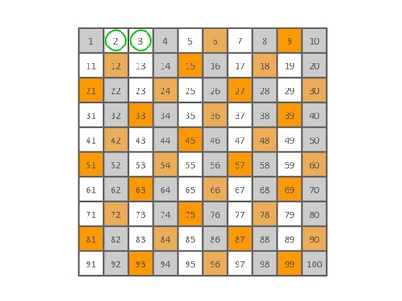
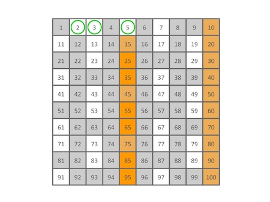
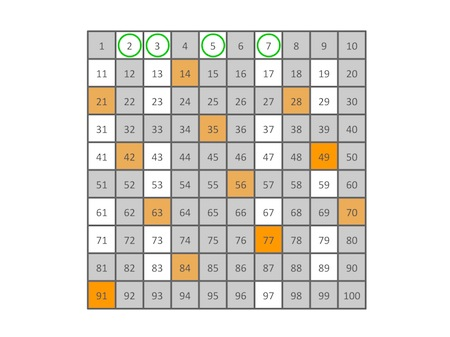
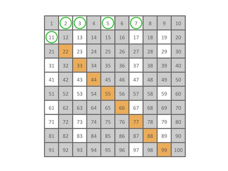
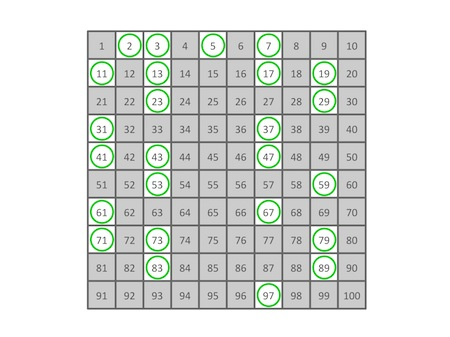

3.1.2. 和质数相关的基础算法¶
本节所说的质数不考虑负数的情况，我们考虑的范围是所有大于等于2的正整数。
3.1.2.1. 质数判断¶
如何判断一个整数是不是质数？对于单个整数n，我们就用最简单的小学数学教的方法，从2开始到n-1为止逐个寻找它的因数，如果这中间找到了至少一个因数，那么n就是一个合数，否则它就是质数。当然了，数学老师教过我们，其实不需要一直找到n-1，只要找到那个其平方值大于等于n的数为止就可以了。
所以判断一个整数是不是质数的程序，核心就是一个从2开始的循环。
bool is_prime(int n)
{
if (n < 2)
return false;
for (int t = 2; t * t <= n; t++)
if (n % t == 0)
return false;
return true;
}
这个方法运行起来速度其实还是很快的，如果程序中只是需要对某些整数进行判断，这个小函数就完全够用了。但是如果程序要求在一个很大范围内找出其中的所有质数，比如1,000,000,000以内的所有质数，那么逐个用这个函数来判断就不那么高效了。这种情况下我们常用一种叫做埃拉托斯特尼筛法（简称埃氏筛法、埃筛、素数筛）的算法来快速打出一张质数表。
3.1.2.2. 埃氏筛法¶
埃氏筛法是由古希腊数学家埃拉托斯特尼（Eratosthenes）所提出的一种简单检定质数的算法。要得到大于2的自然数n以内的全部质数，只要把不大于 \(\sqrt{n}\) 的所有质数的倍数剔除，剩下的就是质数。
下面我们看看筛选100以内质数的过程，要筛出100以内的所有质数，需要从2的倍数开始筛，直到10的倍数就可以了。
首先筛除所有2的倍数（不包括2自己哦）：
然后是所有3的倍数（当然也不包括3自己，以后都是这样，不再重复说明）：
接下来4已经被筛掉了，所以跳过4，筛除所有5的倍数：
6也已经被筛掉了，跳过，筛除7的倍数：
8，9，10，都已经被筛掉了，要不要筛11的倍数呢？按照埃老先生的方法，11的平方已经超过100，所以算法已经可以结束了，不需要筛11的倍数。那么我们用图来看看实际的情况如何：
果然，所有11的倍数都已经被筛掉了。算法到此结束，看看剩下还留着的数有哪些？
剩下的确实就是100以内所有的质数了！
这个算法实现起来也很简单，需要提供一个足够大的 bool 型数组作为质数表。先把0号和1号元素初始化为 false，2号到n号的所有元素初始化为 true。然后从2开始进行筛选，将表中所有的2的倍数号的元素赋值为 false，表中剩下的最小的数字就是3，它不能被更小的数整除，所以3是质数。再将表中所有的3的倍数号元素赋值为 false……依此类推，如果表中剩余的最小的数是m，那么m就是质数，接下来就将表中所有m的倍数号元素赋值为 false。像这样反复操作，直到那个其平方值大于n的数为止，因为从它开始，所有的合数肯定已经都被筛选掉了。（希望大家能去想一想为什么？）
小技巧
一般来说一个程序里只要打一张质数表就够了，我们可以把这张表定义为一个全局的数组。但是相对于通常的做法，我更喜欢在这张表里用 true 表示合数，用 false 表示质数，因为全局变量会自动初始化为全0，也就是全 false，这样的话，我们的埃筛打表函数里就不需要手动把数组所有元素初始化为 true 了，要知道这个步骤需要一个大循环来完成，如果表很大还是挺费时间的。
小技巧
另一个可以提高效率的小窍门：每次用质数 \(p\) 来进行筛选时，不需要从 \(2p\) 开始，直接从 \(p^2\) 开始筛就可以了，因为从 \(2p\) 到 \((p-1)p\) 这些个倍数其实都已经被前面的质数筛过了。
下面是一个用了我的小窍门的“反”埃筛打表程序。
#include <cstdio>
const int MAXN = 1000000;
bool seive[MAXN];
void erato(int n)
{
seive[0] = true;
seive[1] = true;
int p = 2;
while (p * p <= n) {
for (int k = p * p; k <= n; k += p)
seive[k] = true;
while (seive[++p]);
}
}
int main()
{
erato(120);
int cnt = 0;
for (int i = 2; i <= 120; i++)
if (!seive[i])
printf("%3d%c", i, ++cnt % 20 ? ' ' : '\n');
printf("\nThere're %d primes from 2 to 120.\n", cnt);
return 0;
}
思考
如果要打一个从某个整数 \(m\gt2\)，而不是从2开始的质数表，当然你可以坚持从2开始，但是为了节省一点空间和时间，你可以怎样改进这个算法？
埃氏筛子的时间复杂度是 \(O(n\log\log n)\)，这已经非常非常接近 \(O(n)\) 了，绝大多数情况下都不会出现问题。但是对于那些极大的数据规模，例如 \(n\ge10^9\)，再加上如果程序的其他部分也是相当耗时的复杂算法，那么普通的埃筛还是有可能TLE的。这时候一种叫做欧拉线性筛的 \(O(n)\) 筛法就闪亮登场了。
欧拉线性筛是一种 \(O(n)\) 的质数筛选算法，是最为高效率的质数筛。它虽是对埃氏筛法的一种优化改进，但这个算法本身的目的并非是单纯地为了筛选质数，它主要用于高效计算所谓的积性函数，即满足性质 \(f(a\cdot b)=f(a)\cdot f(b)\) 的函数，例如同样以欧拉命名的欧拉函数 \(\varphi(n)\) 就是一个积性函数，它用于求解与正整数n互质的正整数（包括1）的个数。但它是一个不完全的积性函数，只有当两个正整数m和n互质时，它才满足 \(\varphi(n\cdot m)=\varphi(m)\cdot\varphi(n)\)。
对于线性筛，目前我们不要求掌握，以后在高级数论算法的时候再讨论。目前我们要知道的是：
欧拉线性筛是一种最高效的质数筛法，它的平均速度比埃氏筛子快3到4倍，但是它要比埃氏筛法多用至少一倍的内存。
欧拉线性筛在数据量较小的时候，由于大量使用取模运算，速度甚至会比埃氏筛子慢。
因此欧拉线性筛一般不用于打质数表，通常情况下需要打质数表的算法就不多，绝大多数时候用埃氏筛子已经足够了。
欧拉线性筛的主要用途是快速计算积性函数。
如果有兴趣，可以跳转到线性筛和欧拉函数的相关章节：欧拉线性筛和欧拉函数。
3.1.2.3. 中国余数定理¶
中国余数定理，又叫孙子定理，是用于求解一元线性同余方程组的一种算法。用数学语言来讲，中国余数定理给出了一元线性同余方程组有解的判定方法，并且在有解的情况下获得解的一种构造法。
提示
在数学语言里，整数 \(a\) 除以整数 \(m\) 的余数等于 \(r\) 记作 \(a\equiv r\pmod m\)。把整数运算的数值范围限制在 \([0,m)\) 范围之内，一旦某数超过这个范围就将其除以 \(m\) 并用得到的余数来代替它，这样的运算称为模m的运算。
所谓一元线性同余方程组是指整数域内的这样一个方程组：
中国余数定理说，如果方程组中的模 \(m_1,m_2,\dots,m_n\in\Bbb{Z}\) 两两互质，那么对于任意的 \(a_1,a_2,\dots,a_n\in\Bbb{Z}\)，上面这个方程组有解。而且可以用下面的方法来构造出解。
设 \(M=\prod_{i=1}^n{m_i}=m_1\cdot m_2\cdot\cdots\cdot m_n\)，并设 \(M_i=M/m_i,(i=1,2,\dots,n)\)，即 \(M_i\) 是除了 \(m_i\) 以外其他所有n-1个模的乘积。再设 \(t_i\) 是 \(M_i\) 的模 \(m_i\) 运算下的倒数，即 \(t_i\cdot M_i\equiv 1\pmod {m_i}\)。那么上面这个方程组的通解就是：
如果把解限制在模 \(M\) 运算的意义下，那么就只有一个确定的解，\(x=\sum_{i=1}^n{a_it_iM_i} \pmod M\)。
这么说肯定太抽象了，下面来看一个简单的具体例子大家就明白这一大堆数学符号是在做什么了。这是最经典的一类题，最常见的一组数据，小学奥数的时候就做过这组数据的题。
例题
某学校每个班的学生人数为40到60人不等，有一个班的学生分组做实验，如果每组三人就多两人，每组五人就多三人，每组七人就多四人，问这个班有多少学生?
此题用的是最经典的三模组 \(m_1=3,m_2=5,m_3=7\)，显然它们两两互质，对应的余数分别是 \(a_1=2,a_2=3,a_3=4\)。按照中国余数定理，通解一定存在，但在题目规定的40到60之间这个范围内有没有解可不一定，这一点一定要清楚！
先计算出构造通解所需的常数：\(M=3\times 5\times 7=105,M_1=5\times 7=35,M_2=3\times 7=21,M_3=3\times 5=15\)。
然后我们要找出 \(M_1,M_2,M_3\) 的这样一些倍数，使得它们各自除以 \(m_1=3,m_2=5,m_3=7\) 之后的余数都等于1。经过简单的计算可以找到，\(2M_1=70,M_2=21,M_3=15\) 就满足这一要求，它们分别除以3、5、7后得到的余数都是1。
接下来我们就可以按照公式来得到通解了：\(x=105k+2\times70+3\times21+4\times15=263+105k,(k\in\Bbb{Z})\)。
最后，根据题意找出在40和60之间的那个特殊解，容易看出来，当 \(k=-2\) 的时候，\(x=263-2\times105=53\) 满足题目要求，再增加一个105或减少一个105都会超出题目要求的人数范围。所以本题的答案是53人。
可见中国余数定理构造同余方程组的解的方法本身就是一个典型的算法。虽然对于三五七这样一组简单的模来说，似乎解题过程反而复杂了，但是它定义了一套完好的计算过程，每一步都可以用固定的方法进行计算，最后在有限步之内得出正确答案，所以这个定理特别适合用计算机程序来实现。具体怎么实现视具体题目而定，应该不难，重点是理解定理的使用方法。但是有下面几点需要特别关注。
有时候题目会给出不满足两两互质的模组，因此有必要在程序开始时进行互质判断。如果模组不满足两两互质那么可能要用到更加复杂的同余方程组求解方法，有兴趣的可以自行寻找“同余方程组”相关的资料进行学习。但是这样的题目不多，而且大多数情况下遇到这样的模组，完全可以用循环测试公倍数的方法来解决。
如果模的数量非常多，或者模本身数值很大，那么参数 \(M\) 和 \(M_i\) 可能会很大，注意数据超限问题。
如果 \(M_i\) 很大，那么在从1倍开始逐个寻找满足条件的倍数时可以利用余数运算的规则，先计算出 \(M_i\) 除以 \(m_i\) 的余数 \(r_i\)，然后去寻找满足 \(t_ir_i\equiv1\pmod{m_i}\) 的倍数 \(t_i\)，想一想这是为什么？
最后最重要的一点，在题目给出的解的取值范围内，可能有1个解，也可能无解，也可能有多个解！千万注意！！此类题目最容易WA的点就在这里。